平台需要一种可控的风险处置手段：当个别用户的盈利仓位给平台带来较大风险敞口时，由运营在中台对该仓位进行手动减仓。对用户侧，这笔减仓以行业通行的「ADL 自动减仓」形式呈现。
本需求包含两部分：
| 角色 | 诉求 | 本期满足方式 |
|---|---|---|
| 运营 / 风控（使用方） | 快速找到风险最高的盈利仓位，按需减掉指定数量；操作可追溯 | 持仓列表新增「ADL 档位」并支持排序；减仓弹窗张 / 币双单位输入与执行预览；订单明细记录操作人 |
| 被减仓用户（影响方） | 知道仓位为什么变少、按什么价格成交、盈亏多少 | 历史委托 / 成交记录 / 仓位历史中的「ADL」标签与说明；不收手续费 |
调研对象：Binance、OKX、Bybit、Bitget（附 Gate）。来源为各家官方帮助中心与官方接口文档；界面文案未经真机截图核实。
| 维度 | 行业做法 | 本方案 |
|---|---|---|
| 事前提示 | 五家持仓上均有 5 格 ADL 指示灯 | 沿用平台现有指示灯，并作为可减门槛 |
| 仓位区事后展示 | 五家均不在剩余仓位上加标记，部分减仓只是数量变少 | 一致：不加任何标记 |
| 历史记录标识 | 四家都把 ADL 和普通平仓、强平分开标识；OKX 仓位历史区分「ADL 未全平 / 全平」 | 历史委托、成交记录标「ADL」；仓位历史区分「ADL 部分减仓 / ADL 全部平仓」 |
| 成交价 | Binance / Bybit / Gate 用破产价；OKX 通常用标记价格 | 执行时的标记价格（与 OKX 一致） |
| 手续费 | 仅 Bybit 收被减方 Maker 费，其余免收 | 不收 |
| 挂单处理 | Bybit / Gate 撤销被减用户的活动委托 | 撤销该仓位全部平仓类挂单 |
| 事后通知 | 五家至少发邮件，部分加发短信 / App 推送 | 本期不发任何通知 ⚠️ P05 后续评估邮件 |
完整调研见《ADL前端展示竞品调研.md》。
| 端 | 模块 | 功能点 |
|---|---|---|
| 中台 | 当前持仓列表 | 新增「ADL 档位」列；「未实现盈亏」「回报率」「ADL 档位」可排序；「持仓量/可平量」张 / 币切换；操作列新增「ADL减仓」 |
| ADL 减仓弹窗 | 仓位信息、数量输入（张 / 币、小数、全部）、执行预览、挂单提示 | |
| 二次确认与结果 | 二次确认、执行中、成功 / 失败反馈 | |
| 订单 ID 明细 | 新增「操作人」列 | |
| 用户端（App / Web） | 当前持仓 / 当前委托 | 无新增元素：仓位数量变少或消失，平仓类挂单被撤 |
| 历史委托 / 成交记录 / 仓位历史 | ADL 标签 + 说明；撤单原因「因 ADL」；仓位历史区分部分 / 全部 |
| 术语 | 说明 |
|---|---|
| ADL（自动减仓） | 对用户展示的名称。本需求中实际由运营在中台手动发起。 |
| ADL 指示灯（呼吸灯）/ ADL 档位 | 平台现有的 1–5 格指示，表示仓位被 ADL 的排队位置，格数越多越靠前。灯数沿用现有计算逻辑；中台「ADL 档位」与用户端看到的格数一致。 |
| 张 / 币 | 数量的两种单位。币数量 = 张数 × 合约面值（如 BTCUSDT 1 张 = 0.0001 BTC）。 |
| 持仓量 / 可平量 | 可平量 = 持仓量 − 被平仓挂单占用的数量。ADL 的上限按持仓量计算。 |
| 平仓类挂单 | 该仓位上的止盈止损单、只减仓委托等平仓方向的未成交委托。 |
| 标记价格 | 平台用于计算未实现盈亏和强平的参考价格。ADL 按执行那一刻的标记价格成交。 |
| 平台账户 | 承接 ADL 所产生盈亏的平台自有账户。 |
| # | 规则 | 台账 |
|---|---|---|
| 1 | 可减条件：ADL 指示灯亮满 5 格 且 未实现盈亏 > 0，两个条件同时满足 | R13 |
| 2 | 成交价：执行时的实时标记价格（不是运营打开弹窗时的价格） | R04 |
| 3 | 被减部分不产生对手仓位，系统直接结算平仓，盈亏由平台账户承接 | R03 |
| 4 | 被减仓用户不收手续费 | R12 |
| 5 | 释放的保证金和已实现盈亏立即可用，回到交易账户 | R16 |
| 6 | 执行后撤销该仓位全部平仓类挂单 | R14 |
| 7 | 数量上限 = 执行时的持仓量；超出报错、不执行；同一仓位可多次减仓 | R13 / R17 |
| 8 | 数量支持张 / 币切换与小数，小数位数沿用各合约现有数量精度配置 | R07 / R18 |
| 9 | 单人操作，无需复核，不填减仓原因；追溯依赖订单明细「操作人」 | R05 / R10 / R11 |
| 10 | 不限定使用场景 | R15 |
| 11 | 用户端仓位区不加任何 ADL 标记；不发站内信 | R08 / R09 |
| 12 | 用户端 ADL 数量统一用币单位显示（如 0.01 BTC） | R19 |
一期上线本文全部范围（中台 + App + Web 同步）。邮件通知（P05）视上线后客服咨询量再评估。
| 编号 | 端 | 功能 | 类型 | 优先级 |
|---|---|---|---|---|
| F1 | 中台 | 持仓列表新增「ADL 档位」列（可排序） | 新增 | P0 |
| F2 | 中台 | 操作列新增「ADL减仓」按钮及可点条件 | 新增 | P0 |
| F3 | 中台 | ADL 减仓弹窗：仓位信息、数量输入、执行预览、挂单提示 | 新增 | P0 |
| F4 | 中台 | 二次确认、执行与结果反馈 | 新增 | P0 |
| F5 | 中台 | 订单 ID 明细新增「操作人」列 | 调整 | P0 |
| F6 | 中台 | 「未实现盈亏」「回报率」支持排序 | 调整 | P1 |
| F7 | 中台 | 「持仓量/可平量」张 / 币切换，「自动减仓量」跟随 | 调整 | P1 |
| F8 | App / Web | 历史委托、成交记录显示「ADL」标签及说明 | 新增 | P0 |
| F9 | App / Web | 仓位历史区分「ADL 部分减仓 / ADL 全部平仓」 | 新增 | P0 |
| F10 | App / Web | 被撤挂单显示「已撤销 · 因 ADL」 | 新增 | P0 |
原型地址：1009-中台ADL减仓.html（顶部可切换「中台」与「用户端 · App + Web」）。
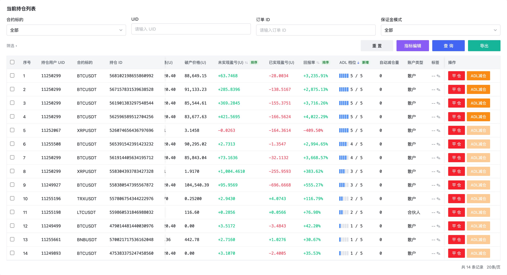
| 区域 | 元素 | 说明 |
|---|---|---|
| 筛选区 | 合约标的 / UID / 订单 ID / 保证金模式、重置 / 指标编辑 / 查询 / 导出 | 不变 |
| 列表 | 「持仓量/可平量」调整 | 表头有「张 | 币」切换，默认张。切到币时显示币数量（如 0.0108 / 0.008 BTC）。「自动减仓量」列跟随同一单位；订单 ID 明细不跟随。 |
| 「未实现盈亏」「回报率」调整 | 点表头排序：降序 → 升序 → 再次点击切回降序。 | |
| 「ADL 档位」新增 | 位于「回报率」之后。显示 5 格竖条 + 「x / 5」，格数与用户端指示灯一致；可排序。 | |
| 「自动减仓量」（已有） | 该仓位累计被 ADL 减掉的数量，每次执行成功后累加。 | |
| 其余列 | 不变。 | |
| 操作列 | 「平仓」 | 不变。 |
| 「ADL减仓」新增：可点 | 指示灯亮满 5 格 且 未实现盈亏 > 0。 | |
| 「ADL减仓」：置灰 | 悬浮提示按原因区分：灯未亮满 →「ADL 指示灯亮满 5 格的仓位才可执行 ADL 减仓」；亮满但未实现盈亏 ≤ 0 →「该仓位未实现盈亏 ≤ 0，不可执行 ADL 减仓」。 |
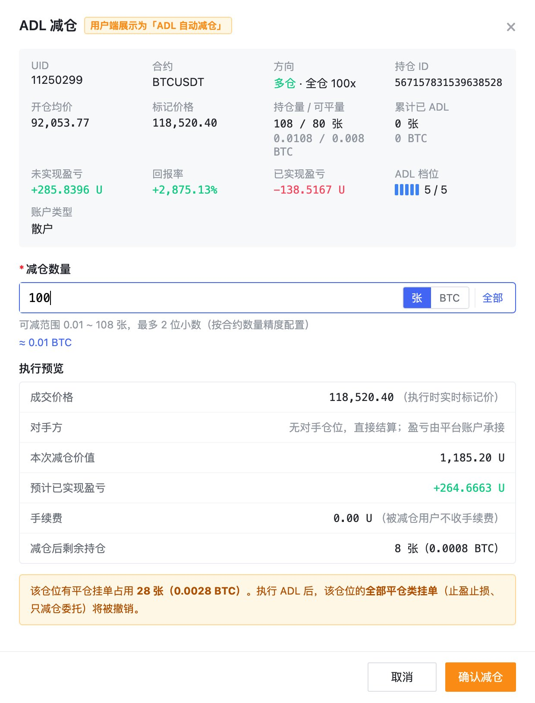
| 区域 | 元素 | 说明 |
|---|---|---|
| 标题 | 「ADL 减仓」+ 标签「用户端展示为『ADL 自动减仓』」 | 提醒运营该操作对用户的呈现方式。 |
| 仓位信息（只读） | UID、合约、方向（多 / 空 · 保证金模式 · 杠杆）、持仓 ID、开仓均价、标记价格、持仓量 / 可平量（张和币两行）、累计已 ADL、未实现盈亏、回报率、已实现盈亏、ADL 档位、账户类型 | 打开弹窗时的快照，用于判断。 |
| 减仓数量 | 输入框（必填） | 可输入整数或小数。 |
| 单位切换「张 | 币」 | 币按钮显示合约币种（如 BTC）。默认跟随列表当前单位。切换时，已输入的合法数值自动换算（如 50.5 张 ⇄ 0.00505 BTC）。 | |
| 「全部」 | 按当前单位填入全部持仓量。 | |
| 范围提示 | 「可减范围 最小单位 ~ 持仓量，最多 N 位小数（按合约数量精度配置）」。 | |
| 换算提示 | 输入合法时显示另一单位的换算值，如「≈ 50.5 张」。 | |
| 执行预览 | 成交价格 | 当前标记价格，注明「执行时实时标记价」。 |
| 对手方 | 固定文案：「无对手仓位，直接结算；盈亏由平台账户承接」。 | |
| 本次减仓价值 | 减仓数量 × 合约面值 × 当前标记价格。 | |
| 预计已实现盈亏 | 按当前标记价格估算，正绿负红。 | |
| 手续费 | 固定 0，注明「被减仓用户不收手续费」。 | |
| 减仓后剩余持仓 | 张和币同时显示；减完时显示「0（仓位全部平掉）」。 | |
| 挂单提示 | 黄色提示条 | 仅当该仓位有平仓挂单占用时显示：「该仓位有平仓挂单占用 X 张（Y BTC）。执行 ADL 后，该仓位的全部平仓类挂单将被撤销。」 |
| 按钮 | 取消 / 确认减仓 | 数量合法前「确认减仓」不可点。 |
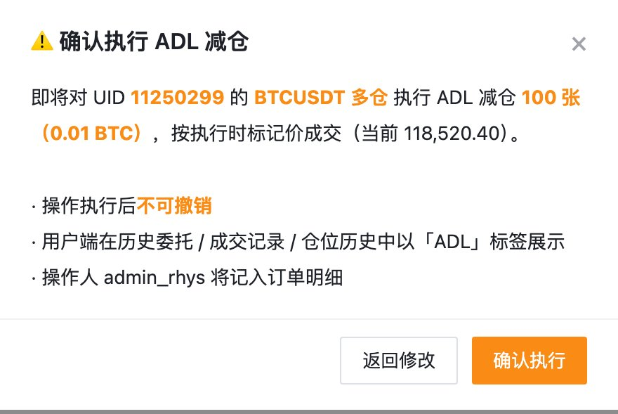
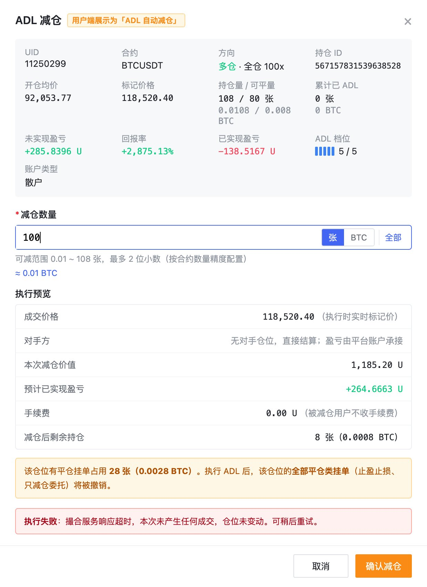
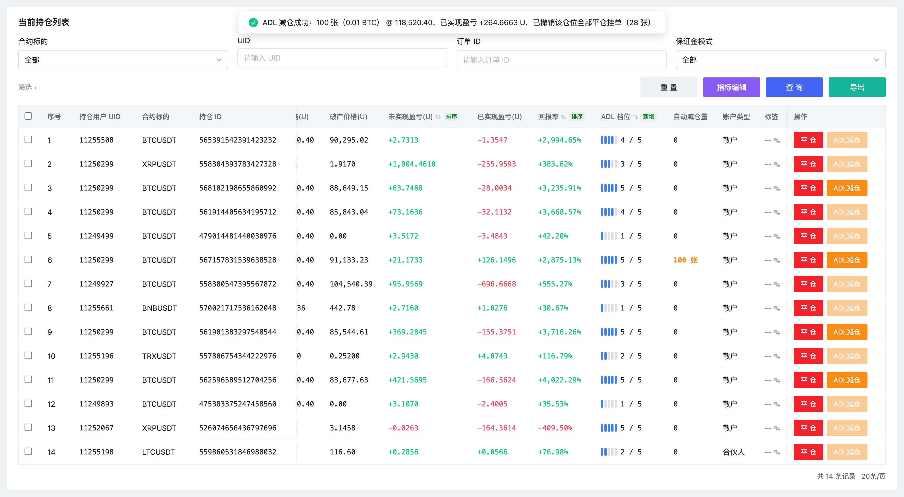
| 状态 | 表现 |
|---|---|
| 二次确认 | 文案：「即将对 UID xxx 的 BTCUSDT 多仓执行 ADL 减仓 100 张（0.01 BTC）（全部平仓时追加『全部平仓』），按执行时标记价成交（当前 xxx）。操作执行后不可撤销；用户端在历史委托 / 成交记录 / 仓位历史中以『ADL』标签展示；操作人 xxx 将记入订单明细」。按钮：返回修改 / 确认执行。 |
| 执行中 | 「确认执行」显示加载并禁用，防止重复提交。 |
| 成功 · 部分减仓 | 关闭弹窗，顶部提示「ADL 减仓成功：100 张（0.01 BTC）@ 成交价，已实现盈亏 +xx U（有挂单时追加『已撤销该仓位全部平仓挂单（X 张）』）」。该行高亮闪烁，持仓量、可平量、自动减仓量、已实现盈亏、更新时间同步刷新。 |
| 成功 · 全部减仓 | 提示「……仓位已全部平掉，已从当前持仓移除」，该行从列表消失。 |
| 失败 · 数量大于当前持仓量 | 弹窗内红色提示：「执行失败：减仓数量 X 大于该仓位当前持仓量 Y（仓位在此期间已变动），本次未执行。请重新输入。」弹窗信息刷新为最新持仓。 |
| 失败 · 仓位已不存在 | 关闭弹窗，提示「该仓位已不存在（已被用户平仓或强平），列表已刷新，本次未执行」。 |
| 失败 · 系统异常 | 弹窗内红色提示：「执行失败：系统响应超时，本次未产生任何成交，仓位未变动。可稍后重试。」 |
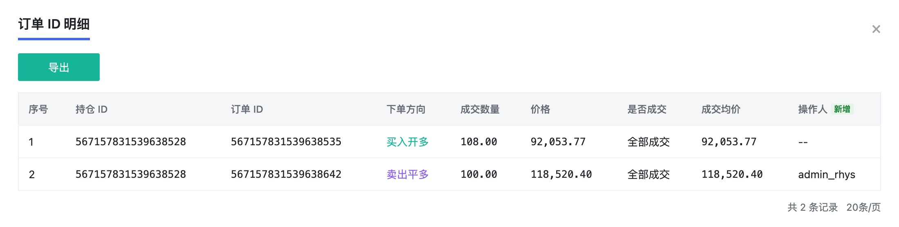
| 元素 | 说明 |
|---|---|
| 现有列 | 序号 / 持仓 ID / 订单 ID / 下单方向 / 成交数量 / 价格 / 是否成交 / 成交均价，全部保持现状。ADL 记录的下单方向沿用现有值（卖出平多 / 买入平空），价格与成交均价为执行时标记价格。 |
| 「操作人」新增 | ADL 减仓记录显示执行的运营账号；用户自己下的单显示「--」。 |
App（从左到右：ADL 前 → 部分 ADL 后 → 全部 ADL 后 → 部分 ADL 后的历史委托；虚线框为变化项，原型标注，非实际 UI）
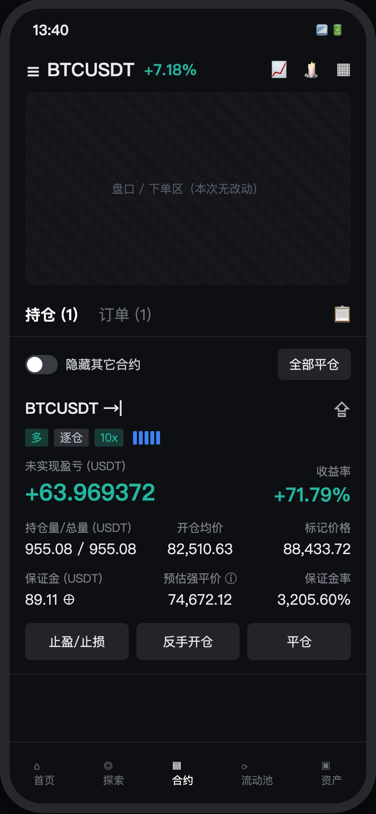
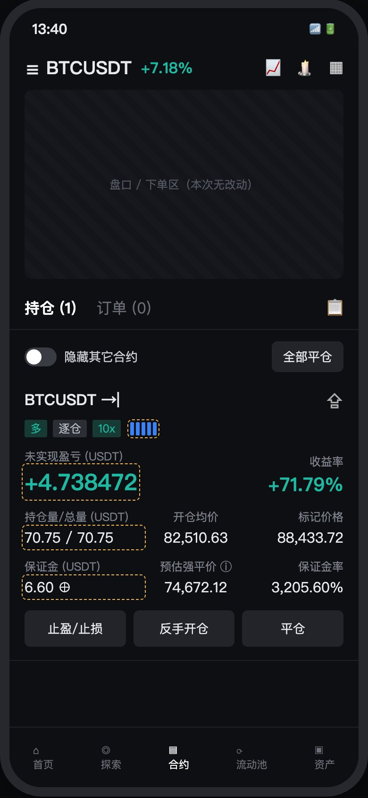
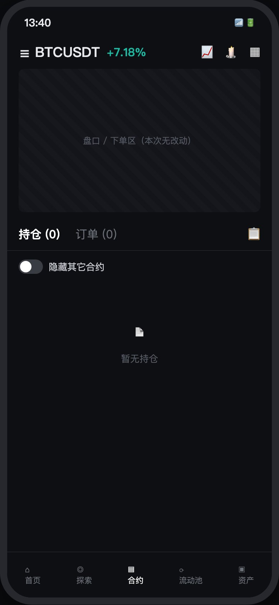
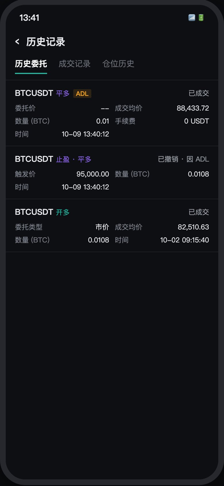
Web
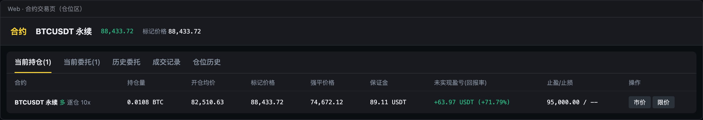
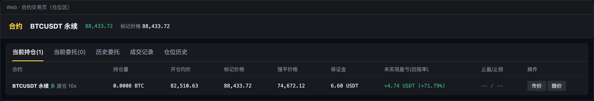
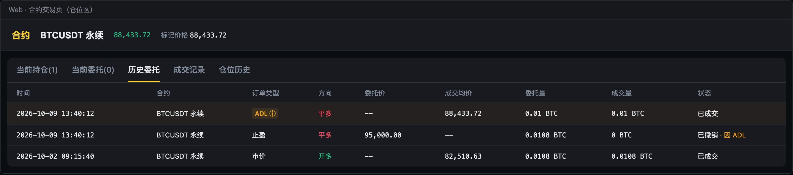
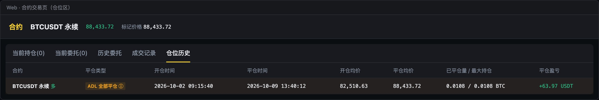
App 与 Web 规则一致，以下以一笔 0.0108 BTC 的多仓被减 0.01 BTC 为例。
| 位置 | 部分 ADL 后 | 全部 ADL 后 |
|---|---|---|
| 当前持仓 | 仓位仍在，数量变为 0.0008 BTC。未实现盈亏、保证金按剩余部分显示；开仓均价、收益率不变。不加任何 ADL 标记。指示灯按现有逻辑重新计算。 | 仓位消失；无其他仓位时显示「暂无持仓」。 |
| 当前委托 | 该仓位的平仓类挂单全部消失，委托数相应减少。 | 同左。 |
| 历史委托 | 新增一条 ADL 记录：订单类型显示「ADL」标签，方向「平多 / 平空」，委托价「--」，成交均价为标记价格，数量用币单位，状态「已成交」。被撤的挂单状态显示「已撤销 · 因 ADL」。 | |
| 成交记录 | 新增一条 ADL 成交：「ADL」标签，成交价为标记价格，数量用币单位，手续费 0，角色「--」，显示已实现盈亏。 | |
| 仓位历史 | 平仓类型「ADL 部分减仓」，已平仓量 / 最大持仓（如 0.01 / 0.0108 BTC），平仓时间显示「--」，平仓盈亏。 | 平仓类型「ADL 全部平仓」，平仓时间为执行时间。 |
| 「ADL」标签说明 | Web 鼠标悬浮 / App 点击 ⓘ 时显示：「自动减仓（ADL）：系统按标记价格减少您的部分或全部仓位，本次减仓不收取手续费，减仓后您可随时重新开仓。」⚠️ P17 文案待确认 | |
| 通知 | 本期不发站内信、邮件、短信、推送 ⚠️ P05 | |
| # | 场景 | 系统行为 | 依据 |
|---|---|---|---|
| 1 | 指示灯未亮满 5 格 | 「ADL减仓」置灰，悬浮提示灯数要求 | R13 |
| 2 | 亮满 5 格但未实现盈亏 ≤ 0（含恰好为 0） | 置灰，悬浮提示未实现盈亏要求 | R13 |
| 3 | 数量为空 | 「确认减仓」不可点 | — |
| 4 | 输入非数字、0 或负数 | 提示「请输入大于 0 的数字」/「减仓数量须大于 0」 | — |
| 5 | 小数位数超过合约精度 | 提示「张数最多支持 N 位小数」或「BTC 数量最多支持 N 位小数」 | R18 |
| 6 | 数量 > 持仓量（输入时） | 提示「超过当前持仓量 X」，不可提交 | R17 |
| 7 | 数量恰好 = 持仓量 | 允许；二次确认标注「全部平仓」；成功后仓位从列表移除，用户端仓位历史为「ADL 全部平仓」 | — |
| 8 | 数量 > 可平量但 ≤ 持仓量 | 允许；执行前撤销全部平仓类挂单 | R14 / R17 |
| 9 | 仓位有平仓挂单，减仓数量 ≤ 可平量 | 仍撤销该仓位全部平仓类挂单 | R14 |
| 10 | 打开弹窗后用户自行平仓或另一运营已减，执行时数量 > 当前持仓量 | 报错、不执行，弹窗刷新为最新持仓 | R17 |
| 11 | 打开弹窗后仓位被平掉 / 强平 | 提示仓位已不存在，刷新列表，不执行 | — |
| 12 | 打开弹窗时满足条件，执行时灯数掉到 4 格或未实现盈亏 ≤ 0 | 推荐：执行时再检查一次，不满足则报错「仓位已不满足 ADL 条件」，不执行 | ⚠️ P14 |
| 13 | 仓位正处于强平流程中，或合约处于暂停交易 / 结算 / 下架状态 | 推荐：拒绝执行，提示「当前仓位 / 合约状态不支持 ADL 减仓」 | ⚠️ P15 |
| 14 | 系统异常 / 超时 | 不产生成交，仓位不变，可重试 | — |
| 15 | 重复点击「确认执行」 | 执行中按钮禁用，只提交一次 | — |
| 16 | 同一仓位多次 ADL | 允许；每次生成独立的委托和成交记录，「自动减仓量」累计 | R13 |
| 17 | 同一仓位既有 ADL 又有用户自己的平仓，用户端仓位历史的平仓类型 | 推荐：取最近一次平仓的类型（OKX 做法） | ⚠️ P18 |
| 18 | 双向持仓，同一合约同时有多仓和空仓 | 按持仓 ID 分别判断、分别操作，互不影响 | R01 |
| 19 | 逐仓仓位被部分 ADL | 保证金按比例释放，连同已实现盈亏立即回到交易账户可用；剩余仓位的强平价基本不变 | R16 |
| 20 | 全仓仓位被部分 ADL | 释放的保证金和已实现盈亏立即可用；对同账户其他仓位强平价的影响见 P07（推导为只会更安全） | R16 · ⚠️ P07 |
| 21 | 标记价格在打开弹窗到执行之间变化 | 以执行那一刻的标记价格成交；预览值仅供参考 | R04 |
| 22 | 被全部 ADL 的用户想立即重新开仓 | 不做任何限制，沿用现有开仓逻辑 | — |
| 23 | 切换单位时输入框为空或数值非法 | 只切换单位，不换算 | R07 |
| # | 端 | 事件 | 触发时机 | 上报参数（业务描述） |
|---|---|---|---|---|
| E1 | 中台 | 持仓列表排序 | 点击「未实现盈亏」「回报率」「ADL 档位」表头 | 排序字段、排序方向、操作人 |
| E2 | 中台 | 列表单位切换 | 点击「持仓量/可平量」表头的张 / 币 | 切换后的单位、操作人 |
| E3 | 中台 | 打开 ADL 减仓弹窗 | 点击可点状态的「ADL减仓」 | UID、合约、方向、持仓 ID、ADL 档位、未实现盈亏、回报率、持仓量、操作人 |
| E4 | 中台 | 悬浮置灰按钮 | 鼠标悬停在置灰的「ADL减仓」上 | 持仓 ID、置灰原因（灯数不足 / 未实现盈亏 ≤ 0） |
| E5 | 中台 | 弹窗内单位切换 | 点击弹窗中的张 / 币 | 持仓 ID、切换后的单位、切换时是否已有输入 |
| E6 | 中台 | 点击「全部」 | 点击弹窗中的「全部」 | 持仓 ID、当前单位 |
| E7 | 中台 | 提交减仓 | 点击「确认减仓」进入二次确认 | 持仓 ID、输入数量、单位、是否全部减仓、是否有平仓挂单 |
| E8 | 中台 | 二次确认操作 | 点击「返回修改」或「确认执行」 | 持仓 ID、选择结果 |
| E9 | 中台 | ADL 执行结果 | 执行完成（成功或失败） | 持仓 ID、UID、合约、结果、失败原因（超持仓量 / 仓位不存在 / 条件不满足 / 状态不支持 / 系统异常）、成交数量、成交价、已实现盈亏、撤销挂单数量、是否全部减仓、操作人、耗时 |
| E10 | 中台 | 取消弹窗 | 点击「取消」/ 关闭弹窗 | 持仓 ID、是否已输入数量 |
| E11 | App / Web | 查看 ADL 说明 | Web 悬浮 / App 点击「ADL」标签的 ⓘ | 端、所在页面（历史委托 / 成交记录 / 仓位历史）、UID |
| E12 | App / Web | 浏览含 ADL 记录的历史页 | 打开历史委托 / 成交记录 / 仓位历史，且列表中有 ADL 记录 | 端、页面、UID、ADL 记录条数 |
以下为建议的接口变动，字段名仅作示意，以研发定稿为准。
adlLevel（1–5，取现有 ADL 指示灯计算结果，与用户端一致）。unrealizedPnl / roe / adlLevel，方向 asc / desc。contractSize（合约面值）与 qtyPrecision（张数精度，取合约现有配置），供前端做张 / 币换算与小数校验。adlEnabled（是否可点）及 adlDisabledReason（LEVEL_NOT_5 / PNL_NOT_POSITIVE），服务端统一判断。positionId、quantity（统一以「张」提交，前端负责币 → 张换算并按精度取整）。操作人从登录态获取。adlLevel == 5 且未实现盈亏 > 0（P14）→ quantity > 0 且符合精度 → quantity ≤ 当前持仓量。ADL_CANCEL）→ 以执行时标记价格生成系统平仓单并成交（来源 ADL，operator = 运营账号，手续费 0）→ 释放保证金与已实现盈亏入交易账户 → 平台账户记录对应盈亏（无对手仓位）。QTY_EXCEEDS_POSITION、POSITION_NOT_FOUND、ADL_CONDITION_NOT_MET、POSITION_STATUS_NOT_ALLOWED、INVALID_QTY、SYSTEM_ERROR。operator：ADL 订单为运营账号，用户订单为空（前端显示「--」）。其余字段不变。ADL，前端据此显示「ADL」标签；ADL 成交的 fee = 0，role 为空。ADL_CANCEL，前端显示「已撤销 · 因 ADL」。ADL_PARTIAL（部分减仓）/ ADL_FULL（全部平仓）。contractSize 由前端换算，统一以币单位展示。| 编号 | 事项 | 推荐 | 影响章节 |
|---|---|---|---|
| P05 | 是否发邮件 / 短信 / App 推送（站内信已确定不发） | 暂不发，上线后看客服咨询量再评估 | 1.3、3.3.5 |
| P07 | 全仓 ADL 对同账户其他仓位强平价的影响 | 推导为只会更安全，需研发确认全仓权益是否按标记价计算未实现盈亏 | 3.4 #20 |
| P14 | 执行时灯数不足 5 格或未实现盈亏 ≤ 0，是继续执行还是报错 | 报错拒绝 | 3.4 #12、5.2 |
| P15 | 仓位强平中、合约暂停交易 / 结算 / 下架时能否执行 | 拒绝执行 | 3.4 #13、5.2 |
| P16 | 哪些中台角色能看到和使用「ADL减仓」 | 与现有「平仓」按钮权限一致 | 3.3.1 |
| P17 | 用户端「ADL」标签的说明文案 | 见 3.3.5，需 PM / 客服确认 | 3.3.5 |
| P18 | 同一仓位既有 ADL 又有普通平仓时，仓位历史的平仓类型怎么显示 | 取最近一次平仓的类型 | 3.4 #17 |
| 版本 | 日期 | 阶段 | 变更摘要 | 变更原因 |
|---|---|---|---|---|
| V1.0 | 2026-10-09 | 初稿（评审前） | 基于原型与规则台账 v1.0（R01–R19）产出完整 PRD | 中台 ADL 减仓需求立项，准备评审会 |
| V1.1 | 2026-10-09 | 初稿（评审前） | 3.3 全部截图占位替换为原型截图（图 1–14）；文档主题色改为淡紫色 | PM 要求补齐原型截图、调整配色 |